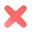

<!--
  Generated template for the ExplorePage page.

  See http://ionicframework.com/docs/components/#navigation for more info on
  Ionic pages and navigation.
-->
<ion-header>

  <ion-navbar color="white">
      <!-- <ion-buttons menuToggle>
          <button ion-button icon-only (click)="openModal()">
              
          </button>
      </ion-buttons> -->
      <ion-buttons left>
          <button ion-button icon-only>
              
          </button>
      </ion-buttons>
    <ion-title></ion-title>
    <ion-buttons right>
        <button ion-button icon-only (click)="openModal()">
            
        </button>
    </ion-buttons>
  </ion-navbar>

</ion-header>


<ion-content on-swipe-left="goToChat()" on-swipe-right="goToSettings()" vertical layout scroll="false"  style="background:#F6F7FC"  padding>
    <div class="card-container text-center" flex relative vertical layout>
        <div *ngIf="noSlike" >
          <div class="credits-section text-center animated fadeInUp" >
            <h5 class="mi-pollita" style="color:#BFC5D5"></h5>					
            <div class="wrapper text-center">
              <div class="pos-rlt">
              <div class="thumb-xxl rounded profileP border-profile" style="background-image:url({{slikephoto}});height:{{w}}px;width:{{w}}px;" ></div>
              <i class="icon ion-arrow-up-c button-edit light text-lg b b-3x b-light b-2x rounded" style="background:#275BDF"></i>							
              </div>
            </div>						
            <h1>Uhm...</h1>
            <h4>You dont have enough Super likes</h4>
            <span class="spotlight-me" (click)="buySlike()" style="background:#275BDF;border:#025BDF">Buy 10 Super Likes</span>
            <span class="spotlight-me" (click)="noBtnSlike()" style="background:#dedede;border:#d0d0d0">No thanks</span>
            <br><h4>Cost <b>400</b> Credits</h4>                    
          </div>
        </div>	
          <div  *ngIf="cards.length == 0 && !noSlike" vertical layout center flex style="z-index:99" (click)="openSettingsModal()" >
            <div flex horizontal layout center >
              <div class="load" >
          		  
              </div>
            </div>
            <div class="text-muted text-center l-h">
              {{loading}}
            </div>
          </div>
          
          
          
        </div>
        <div class="ad1" *ngIf="ad1">
          <div [innerHTML]="ads"></div>
        </div>
        <div class="card-actions padder-copatene" *ngIf="!noSlike" horizontal layout around-justified center>
    
          <div class="card-action" *ngIf="discoverChat">
            <button class="button button-light rounded" (click)="chatUser('home.messaging','right',cu2)">
              
            </button>
          </div>
    
          <div class="card-action bigger-button">
            <button class="button button-large button-light rounded s" [ngClass]="{zoom: isMoveLeft}" (click)="nolike();cardDestroyed(0,0);">
              
            </button>
          </div>
    
          <div class="card-action bigger-button">
            <button class="button button-large button-light rounded cardlike" [ngClass]="{zoom: isMoveRight}" (click)="like();cardDestroyed(0,1);">
              
            </button>
          </div>
    
          <div class="card-action" *ngIf="discoverSlike">
            <div class="slike" *ngIf="superLike > 0 && superLike < 10"><span style="font-size:14px;margin-left:6px">{{superLike}}</span></div>
            <div class="slike" *ngIf="superLike >= 10"><span style="font-size:12px;">{{superLike}}</span></div>		
                <button class="button button-light rounded" (click)="slike();">
                  
                </button>
          </div>
    
        </div>
</ion-content>
